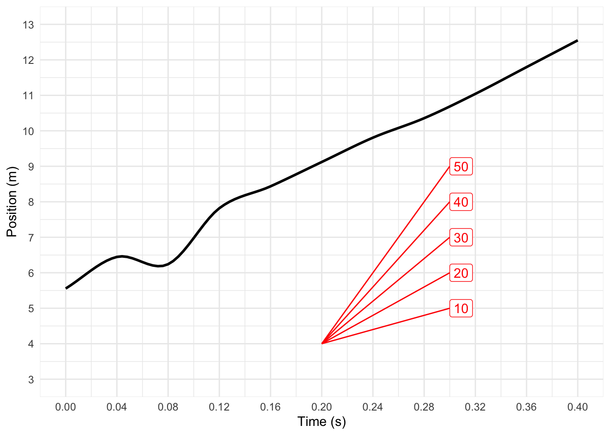
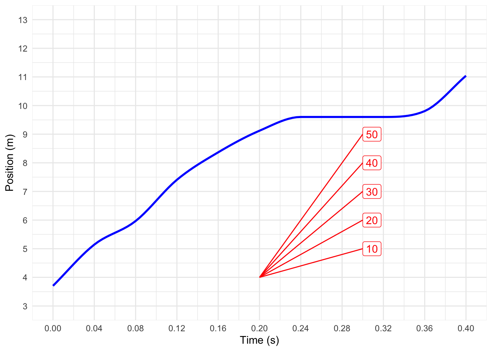
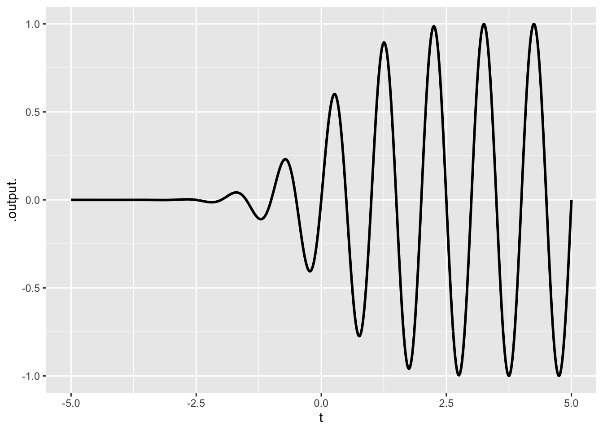
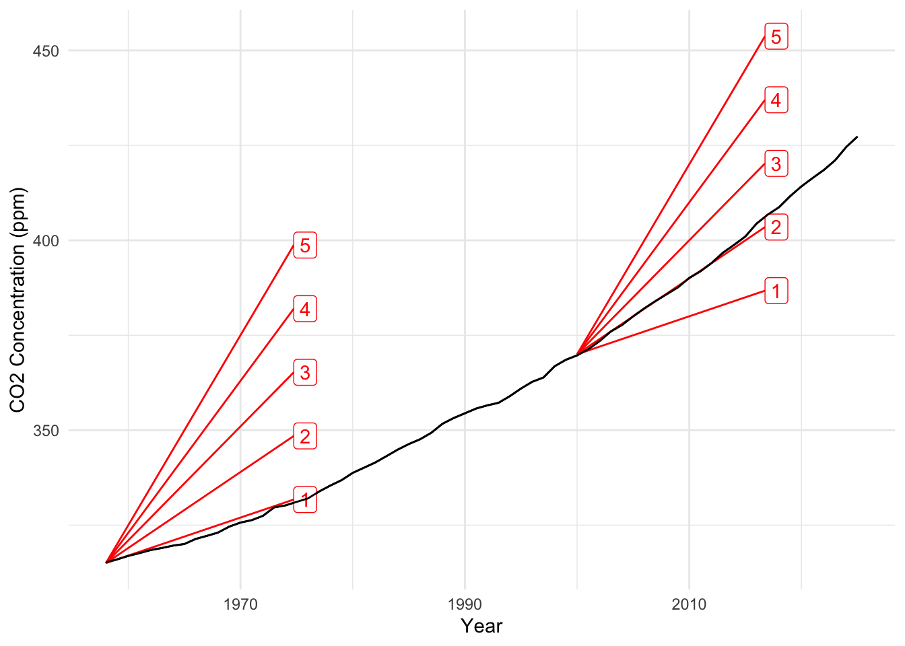

#| caption: Calculation for 10 heads out of 12 flips
dbinom(10, prob = 1/2, size = 12)Quantitative Argumentation
Chapter 14 Exercises
Note14.A
Exercise 1 We are going to pick up on drill problem 10.B.2 [give a link here.] As a reminder, that drill problem was about your trying to predict the outcome of a football game involving your favorite team, the particular form of the prediction being the end-of-game score for your team. For simplicity, assumed that your prior make score outcome of 5 to 24 equally probable and every other score impossible, that is, probability 0 in your prior. (This is unrealistic, since obviously 25, 26, and so on might the the outcome, but our interest here is in showing how a calculation might be structured.)
So, your prior is 0.05 for each of the 20 scores between 5 and 24. (Note that they add up to 1, so this prior is in the form of an absolute probability distribution, which is of course a valid relative probability distribution as well.)
The observation, made a half-time, was a score of 10 pts. Based on this observation, we want to know the posterior distribution for the end-of-game score. Do find this, we simply multiply the likelihood of the observation for each of the hypotheses in the prior. Likelihoods should not be simply pulled from the air, there should be some firm reasoning behind them.
Common sense suggests that a half-time score of 10 is reasonably connected to an end-of-game score of 20. That is, it seems rough justice to say that it’s reasonable to expect the second half of the game to go more or less like the first half. But it would be silly to demand that the end-of-game score must be double the half-time score. A stickler for details might point out that the rules of football imply that an end-of-game score of 11 is impossible from a half-time score of 10. A Moneyball enthusiast might turn to the teams’ history in past games to look at how many points were scored in the second half of the game. More narrowly, the statistician might look only at previous games where the half-time score was 10, or perhaps throw the opposing team’s half-time score into the mix, and so on. But such detail requires more data. More data requires going back further in history. Going back further in history makes more questionable the relevance of that past record to the current performance of your team.
Here is a very rough (but reasonable) model of scoring in a football game: at the end of the game, each point earned is equally likely to have come from the first-half of the game or from the second half. With this in mind, there is a road forward to calculate the likelihood of each end-of-game hypothesis given the half-time observation of 10 pts. Moving forward requires some technical knowledge about probability theory which there is no reason for you to have already gained. But in this situation as in many real-world situations, there is often an expert who can guide you with technical matters.
I’m going to play the role of the expert consultant and tell you the calculation to do. The binomial distribution is well suited to this situation. The intuitive setting for the binomial is a series of coin flips, the binomial distribution tells you the probability out of n flips total, of getting 0 heads, or 1 head, or 2, or so on all the way up to n heads.
The R chunk contains the command needed to calculate the probability of getting k heads out of n flips. To use it we provide three numbers: the number of heads, the number of flips (size=) and the probability of a head in any one flip (prob = 1/2). (If we thought points come harder in the second half of the game, we might set, for instance prob = 1/4, but we will stick to 1/2.)
The table below lists each of the hypotheses for the end-of-game score as well as the prior probability we have assigned to each. There is also a column for the likelihood of observing a half-time score of 10 given each hypothesis. I’ve filled in the computer command that will calculate the likelihood for the first few hypotheses; the others follow the same pattern.
Fill in the table by calculating each likelihood, then calculate the posterior relative probability by multiplying together the prior by the likelihood.
| hypothesis (pts) | prior prob | likelihood | posterior relative prob |
|---|---|---|---|
| 5 | 0.05 | dbinom(10, prob=1/2, size = 5) |
|
| 6 | 0.05 | dbinom(10, prob=1/2, size = 6) |
|
| 7 | 0.05 | dbinom(10, prob=1/2, size = 7) |
|
| 8 | 0.05 | ||
| 9 | 0.05 | ||
| 10 | 0.05 | ||
| 11 | 0.05 | ||
| 12 | 0.05 | ||
| 13 | 0.05 | ||
| 14 | 0.05 | ||
| 15 | 0.05 | ||
| 16 | 0.05 | ||
| 17 | 0.05 | ||
| 18 | 0.05 | ||
| 19 | 0.05 | ||
| 20 | 0.05 | ||
| 21 | 0.05 | ||
| 22 | 0.05 | ||
| 23 | 0.05 | ||
| 24 | 0.05 |
To convert the posterior relative probability to an absolute posterior probability, add up all the relative probabilities and then divide each relative probability by this sum.
This is a lot of calculations, and a professional would automate them. You’re not expected to know how to do the automation, but perhaps you can understand what’s involved.
tibble::tibble(
hypothesis = 5:24,
prior = 1/20,
likelihood = dbinom(10, prob = 1/2, size = hypothesis),
relative_posterior = prior * likelihood,
absolute_posterior = relative_posterior / sum(relative_posterior)
) |> round(3) |> # we don't need all those digits!
knitr::kable() # to display nicely
- What is the end-of-game posterior for a total score of 10 pts? (That is, no points scored in the second half.)
- A friend, impressed with your Bayesian powers, asks you at half-time, “What’s the probability that the final score will be \(\leq 15\)?” (Pick the closest answer.)
- Another friend, more competitive than the first, offers you an even-money bet claiming that the end-of-game score will be \(\geq 20\). How enthusiastic should you be to accept this bet?
- A third friend thinks that the number 21 has magical properties. She’s not so silly as to make an even money bet that the end-of-game outcome will be 21, and asks you to give her 7-to-1 odds. (This means, if she wins you pay her $7. If she loses, she pays you $1.) Are you willing to take the bet?
Exercise 2 The series of images of “The Horse in Motion,” made by Eadweard Muybridge in 1878, was one of the first stop-action, multi-frame photographs. There are 11 successive frames, each separated by 0.04 seconds. (The last frame is out of sequence, so ignore it for our purposes.) The vertical lines are separated by 27 inches. The whole set of frames, from 1 to 11, covers approximately one-half stride cycle of the horse.

We are going to look at the rate of change of the horse’s position with respect to time. Of course, “rate of change of position with respect to time” is more commonly known as velocity. And, evidently, different parts of the horse are moving with different velocities at different times.
To start, make measurements from the photos of two parts of the horse: the tip of the nose and the center of one of the front hooves. Which hoof? The one that is not in contact with the ground in frame 1 and is being pulled behind a bent knee in frame 2. (Note that to see the hoof is being pulled, you might need to refer to frame 3. Simple dynamical phenomena play out over extended time.)
The following is a text-entry box that will be submitted along with your other answers. Questions (1) - (3) below are to get you started filling in the velocity columns of the table.
- What is the change in nose position from frame 1 to frame 2?
- What is the rate of change of nose position with respect to time from frame 1 to frame 2?
- What is the rate of change in hoof position with respect to time from frame 1 to frame 2?
Consider this phrase: “The rate of change in hoof position with respect to nose position.” Calculate it, then explain how the value is related to the values from (2) and (3).
Do similar calculations as in (2) and (3), but go backwards: from frame 2 to frame 1. Do your results have an evident relationship to the values you calculated in (2) and (3).
Fill in the velocity columns for ?@tbl-nose-hoof for all ten pairs of successive frames. As you do so, contemplate this question: for the rates of change from frame n to n+1, should you enter the values on line n or line n+1 or something different? Would either be valid? Both? We just want to hear what you’re thinking about this, not that there is a right answer.
- Imagine that your answer to the previous question was “both.” You would then have two different velocities to enter on each line of the table. But the horse’s nose cannot have two different velocities at the same time. This is a genuine problem. In Chapter 14 the word “instantaneous” is associated with the conceptual resolution of this problem. Explain the connection between “instantaneous” and the resolution of the riddle in (6).
- A high-speed, high-resolution video camera can cover the same time span as covered in Muybridge’s photo with thousands of successive frames rather than just eleven. How might such data make the question of where to place each velocity data point practically of no consequence.
Figure 1 shows a model of the position of the nose and hoof as they vary continuously in time. The graphs are annotated with sloping lines where the unit of the slope is m/s.


Copy over one of the graphs (approximate is OK) to a piece of paper. Annotate the graph with:
- Points and a sloping line connecting them that correspond to the velocity calculation between frames 3 and 4 (that is, time 0.08 to 0.12 s).
- Points and a sloping line connecting them that correspond to the overall velocity over the interval from time zero to time 0.40 s
- The instant when the velocity is highest.
The {devoirs} homework collection system doesn’t handle pictures, but bring your annotated graph to class for discussion purposes.
Exercise 3 Using the interactive R chunk, make a plot of the function exp2(x) * osc() over the domain -5 to 5. (The npts=500 just helps to make the graph look smooth.)
#| caption: R command chunk
slice_plot( ~ , dom( ), npts=500)- What is the range covered by the vertical axis? (Choose the closest answer.)
- The following plot involves the multiplication of two core modeling functions. Which two?

- Consider the three core modeling functions recip(), exp2(), log2(). For each of the settings below, say which is the better model.
3a. The input is time since your last purchase, the output is the amount of your credit card debt if you do nothing to pay off the outstanding debt.
3b. The input is the amount of time you spend procrastinating, the output is the amount of work you get done.
3c. The input is the amount of time you spend preening for a date, the output is how good you look.
- The input is the number of people you share an apartment with, the output is your share of the rent on the apartment.
- The input is driving speed, the output is the time taken to get to your destination (assuming no problems with the car).
- The input is the number of weeks you unintentionally left a piece of cheese under your bed, the output is the amount of mold on the cheese.
- The input is the amount of time you spend watching Netflix the day before an exam, the output is the your score on the exam.
Exercise 4 Consider a bad movie plot organized along these lines: The protagonist has a disturbing dream that the universe has changed from “Normal” to a new state: “Doom.” Doom was hitherto thought impossible. Doom and Normal constitute two hypotheses about the state of the universe.
To say that a hypothesis is impossible is equivalent to assigning it probability zero. That’s what everyone else believes, but our protagonist, on account of his dream, assigns Doom the rhetorical odds “one-in-a-million.”
- If an outcome has probability zero, what are the odds of that outcome?
Now, in typical movie fashion, the protagonist starts to observe events—call them “strange events”—that shouldn’t be happening. In the Doom universe, such events have a high likelihood. But in the normal universe they could also be observed due to optical illusions, distraction, or tricks played by the neighborhood children who think the protagonist is crazy. Let’s assign each observed strange event a likelihood ratio of 2 in favor of Doom.
- Explain what feature of Bayesian reasoning allows evidence to be in favor of a hypothesis that we believe is impossible.
- Translate a likelihood ratio of 3 according to the verbal scale for evidence:
The Bayesian updating calculation has a particularly simple mathematical form when the prior probability is stated in terms of odds.
\[\text{posterior odds} = \text{prior odds} \times \text{likelihood ratio} .\]
For the character who claims that the prior odds of Doom is zero, the posterior odds must always remain zero regardless of the likelihood ratio. In the movies, such a character always ends up dying in a dramatic way, just punishment for his skepticism.
- For our protagonist, who started with a prior odds of one-in-a-million, the posterior odds after one such “strange” event will be what?
Our protagonist starts to encounter other “strange” reports, hearing about them on the radio, seeing them in news reports from diverse locations, and so on. For the skeptic, these are all of no import. It is impossible to move the skeptic off his prior odds of zero. But our protagonist takes them seriously. Or, at least, he is willing to fold them in to a Bayesian calculation.
- After five strange events (in total), what should be our protagonist’s posterior odds? (Pick the closest answer.)
- Another five strange events are observed, making 10 in all. What should be our protagonists posterior odds?
Amazingly, we have all been exposed to series of strange events through web “doomscrolling.” We Bayesian thinkers might deal with the deluge by adding new hypotheses to consider. Not just Normal and Doom, but also Clickbait/AI.
Exercise 5 Velocity is the rate of change of position with respect to time. Acceleration is the rate of change of velocity with respect to time. So acceleration is the _____ derivative of position.
Exercise 6 How does a rate of change differ from an ordinary rate? What do you need to measure each?
Exercise 7 “The global rise in CO_2_ has nearly leveled off.” — BBC News, Nov. 6, 2025
The meaning of the above sentence seems plain. Or is it?
- Which of these do you think is closest to the meaning of the BBC quote?
The BBC news item is based on measurements of CO_2_ at the Mauna Loa observatory in Hawaii from March 1958 through October 2025. The data are available here. The graphic below shows the average measurement each year. The data have been annotated with “slope roses,” a visual key for measuring a rate of change. (The units are ppm-per-year.)

- What is the rate of change of CO_2_ concentration with respect to time in 1970? Pick the closest answer.
- If the rate of change in (2) had held from 1970 through all the intervening time up to 2025, what would the current CO_2_ concentration be? Pick the closest answer.
- In year 2000, what was the rate of change in CO_2_ concentration with respect to time?
- Estimate the rate of change in CO_2_ in 2020-2025.
- Explain, as best you can, how the BBC quote is reflected in the actual data.
Exercise 8 An article in The Economist in January 2026 stated:
Since 2021, demand for electricity in India has increased by around 9% each year. It is set to more than double in the next decade. Source
Assuming that the starting point is 2025 and that the growth continues at 9% per year, is it a fair statement that electricity demand will “more than double” in the next decade.
Explain your reasoning, using the “xf_to_def("Rule of 72").”
Exercise 9 AI generated: In quantitative reasoning, we move from linear growth (adding the same amount each time) to Exponential Growth. This occurs when the rate of change function is proportional to the current value. In social media, we call this “virality.”
The more people who see a post, the more people there are to share it, which causes the growth rate to accelerate.
Question 15: The Viral Content Surge
Scenario: You are a digital marketing manager for a new sustainable fashion brand. You post a short video that goes viral. You model the total number of views (V) over time (t, in hours) using the following exponential function:
V(t)=500⋅e 0.15t
To track how fast your brand is growing at any specific moment, you use the rate of change function, V ′ (t), which represents the “views per hour”:
V ′ (t)=75⋅e 0.15t
The Question: Compare the state of your video at hour 2 and hour 10. Which of the following statements correctly interprets the rate of change of your views?
At hour 2, you are gaining views at a rate of 101 views/hour; by hour 10, the rate has accelerated to 336 views/hour.
At hour 2, you are gaining views at a rate of 101 views/hour; by hour 10, the rate has accelerated to 2,240 views/hour.
The rate of change is constant at 75 views per hour because that is the leading coefficient.
At hour 10, the total views are higher, but the rate of growth actually slows down because of diminishing returns.
Professor’s Quantitative Breakdown
Exponential growth is characterized by a “snowball effect.” We calculate the rate of change by plugging our time values into V ′ (t):
At t=2:
V ′ (2)=75⋅e 0.15(2) =75⋅e 0.3 ≈75⋅1.35=101.25 views/hour At t=10:
V ′ (10)=75⋅e 0.15(10) =75⋅e 1.5 ≈75⋅4.48=336 views/hour Correct Answer: A Note the difference between the total count and the rate. At hour 10, your total views V(10) would be about 2,240, but the speed at which you are currently gaining them is 336 per hour.
The “Doubling Time” Concept
A key feature of this rate is the Doubling Time. In exponential growth, the time it takes for the quantity to double is constant, regardless of how large the number is.
For a growth rate of r=0.15, we use the “Rule of 70” (or more accurately, ln(2)/r):
Doubling Time≈ 0.15 0.693
≈4.62 hours Whether you are going from 500 to 1,000 views or 50,000 to 100,000 views, it will take the same 4.6 hours!
Visualizing Viral Growth in R
R library(ggplot2)
Define growth function
growth_func <- function(t) 500 * exp(0.15 * t) rate_func <- function(t) 75 * exp(0.15 * t)
Generate data
t_vals <- seq(0, 24, length.out = 500) df <- data.frame( time = t_vals, views = growth_func(t_vals), rate = rate_func(t_vals) )
Plotting Total Views
ggplot(df, aes(x = time, y = views)) + geom_line(color = “purple”, size = 1.2) + labs(title = “Total Video Views Over 24 Hours”, subtitle = “Exponential Growth: V(t) = 500 * e^(0.15t)”, x = “Time (hours)”, y = “Total Views”) + theme_minimal() Professor’s Closing Thought
In the non-STEM world, understanding exponential rates is the difference between a “fad” and a “trend.” If the rate of change function is increasing, the momentum is still building. If the rate of change begins to flatten, you have reached the “saturation point” of your audience.
Exercise 10 On a graph of a function, what geometric quantity is the rate of change of the function with respect to its input? What is the name of the function that outputs that rate for every input?
Exercise 11 The derivative of a function is itself a function. What are its inputs and what is the output (in words)?
NoteChap 14 Key vocabulary
Only one of the following is a valid description of calculus. Mark that one.
Only one of the following is a valid description of continuity. Mark that one.
Only one of the following is a valid description of derivative. Mark that one.
Only one of the following is a valid description of differentiation. Mark that one.
Only one of the following is a valid description of diminishing marginal returns. Mark that one.
Only one of the following is a valid description of first derivative. Mark that one.
Only one of the following is a valid description of margin. Mark that one.
Only one of the following is a valid description of second derivative. Mark that one.